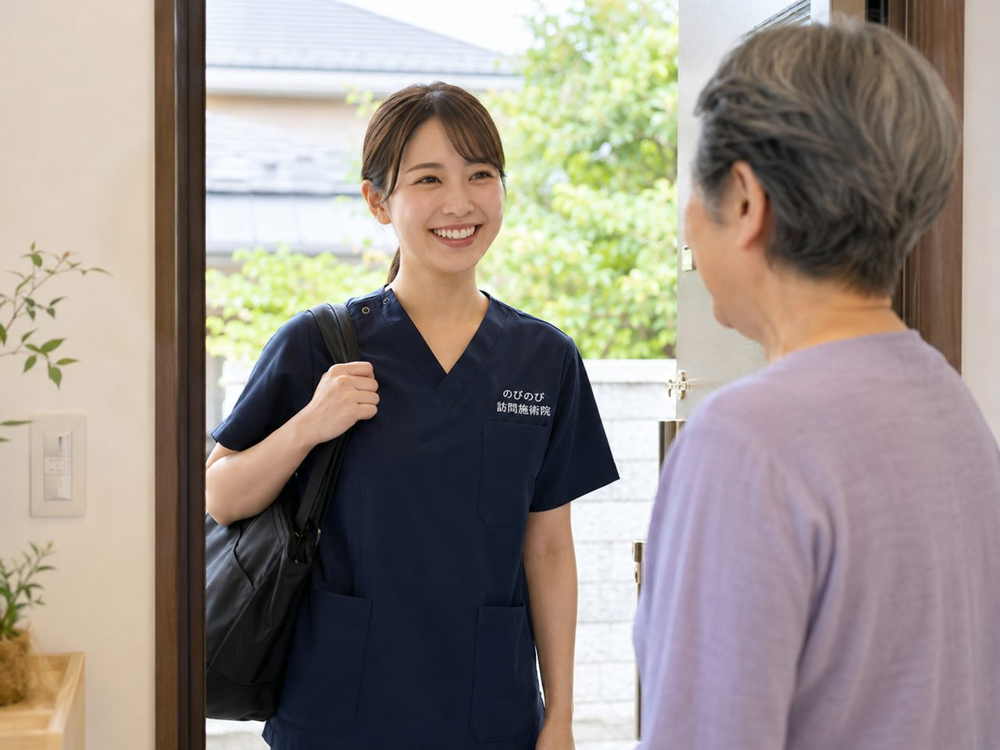

「今から鍼灸師を目指すのは遅いでしょうか」「この年齢で採ってもらえるでしょうか」。どちらもよくうかがう質問です。結論を先に書くと、資格を取ることにも国家試験を受けることにも年齢の上限はありません。そして訪問鍼灸マッサージという働き方については、年齢を重ねていることがむしろ強みになる面があります。ただ、いいことばかり書いても役に立たないと思うので、大変な点も一緒に書きます。
資格を取ることに、年齢の上限はありません
はり師・きゅう師の国家試験を受けるには、養成施設で決められた課程を修めることが必要です。専門学校なら三年以上、大学なら四年。入学の条件は高校卒業と同じ程度の学力を認められていることで、年齢の上限はありません。国家試験そのものにも上限はありません。
実際に、専門学校の昼間部にも夜間部にも、二十代から六十代までの方が同じ教室にいます。夜間部のある学校なら、日中働きながら通うという進み方もできます。三年間の学費と時間をどう作るかが現実の課題で、年齢そのものが壁になることはありません。くわしい制度や学校ごとの条件は、進学先の学校に直接お確かめください。
採用の側から見て、年齢をどう見ているか
のびのびが選考で見ているのは、資格があるか、人の家に上がって落ち着いて向き合えるか、記録や連絡をきちんと回せるか、そして続けられる体力があるかどうかです。年齢の欄を見て判断することはしていません。
これは方針というより、実務からくる話です。訪問先の多くは高齢の方です。ご本人やご家族と話すとき、人生の時間を重ねてきた人のほうが安心して任せてもらえる場面があります。介護や看護、営業、接客、子育て。前の仕事で身につけたものが、そのまま訪問の現場で効いてきます。
院の中の仕事だと、若さや勢いが評価されることもあります。訪問は一対一で、落ち着いて話を聞くところから始まる仕事なので、評価される力が少し違ってきます。訪問鍼灸マッサージのやりがいは？院との違いと続く理由にも、その違いを書きました。
年齢を重ねた人に、訪問が向いている理由
ひとつは、働き方を自分で調整しやすいことです。一日に回る件数、担当するエリア、勤務の形。院の営業時間に体を合わせるのではなく、自分の体力に合わせて組み方を相談できます。のびのびでもパートや時短、業務委託といった形をご用意していて、くわしくはパート・時短・業務委託で働く｜訪問鍼灸マッサージの働き方をご覧ください。
もうひとつは、力任せの仕事ではないことです。訪問での施術は、ベッドに寝ておられる方、車いすに座っておられる方に、姿勢を無理に変えずに行うものです。体を痛めるような使い方をしなくても成り立ちます。むしろ、どこを触ればいいかを見極める目のほうが効きます。
それに、この分野は担い手が足りていません。通院がむずかしい方は増え続けていて、その数に対して訪問できる施術者の数が追いついていません。年齢で選ばれないという以前に、そもそも人が足りない分野です。背景は鍼灸師の需要はこれからどうなる？訪問という働き方の将来性に書きました。
正直に言っておきたい、大変なところ
移動があります。のびのびでは社用車か電動自転車、バイクで回ります。雨の日も夏の暑い日もあります。一日に何軒かうかがうので、移動そのものが仕事の一部です。車の運転が苦手な方は、エリアの組み方を相談するところから始めます。
記録と報告があります。施術のあとに記録を残し、医師への報告書を作ります。のびのびはスマートフォンで入力する形にしていて、複雑なパソコンの操作は必要ありません。ただ、まったく機械に触れないという方には、はじめに慣れていただく時間が必要です。
それから、人の家に入る仕事です。玄関で靴をそろえる、勝手に物を動かさない、家族の事情に立ち入りすぎない。技術より前に、そういう身のこなしが求められます。これは年齢を重ねた方のほうが、たいてい自然にできておられます。
ブランクがある場合はどうか
資格を取ってから長く現場を離れていた、出産で数年空いた、別の業種に移っていた。そういう方も来られます。訪問は一対一で、同行研修から始められるので、勘を取り戻す時間を取りやすい環境です。
はじめは先輩の訪問に同行し、次に自分で回りながら相談できる形にし、それから担当を持つ。この順番で進みます。くわしい流れは鍼灸師がブランク・未経験から復帰するには｜研修とサポートにまとめました。
まずは話を聞くところから
年齢のことが気になって応募をためらっておられるなら、一度お話だけでもさせてください。今の体力、動ける時間、住んでいる場所。それを聞いたうえで、どんな組み方ならできそうかを一緒に考えます。見学だけ、話を聞くだけでも構いません。
よくある質問
Q鍼灸師の専門学校に年齢の上限はありますか。
Aありません。入学の条件は高校卒業と同じ程度の学力を認められていることで、年齢の上限は設けられていません。国家試験にも上限はありません。学校ごとの条件は進学先に直接お確かめください。
Q50代からでも採用されますか。
A年齢で判断していません。資格があり、訪問という働き方に納得いただけて、続けられる体力があるかどうかを見ています。一日に回る件数やエリアは、体力に合わせて相談できます。
Q他の業種から転職しても通用しますか。
A介護や看護、接客、営業といった経験は、訪問の現場でそのまま役に立ちます。ご本人やご家族と話すこと、ケアマネジャーと連絡を取ることが日常的にある仕事なので、人と関わる仕事の経験は強みになります。
Q体力に不安があります。
A訪問の施術は力任せに行うものではありません。ただ、移動はあります。社用車か電動自転車、バイクで回りますので、どのエリアをどのくらいの件数で組むか、はじめにご相談ください。
Qパソコンが苦手でも大丈夫ですか。
A記録と報告書はスマートフォンで入力する形にしています。複雑な操作は必要ありませんが、機械に慣れていない方には、はじめに練習する時間をお取りします。
Q見学だけでもできますか。
Aできます。応募を決める前に、一日の動きを見ていただくことも、話を聞くだけで帰られることもできます。